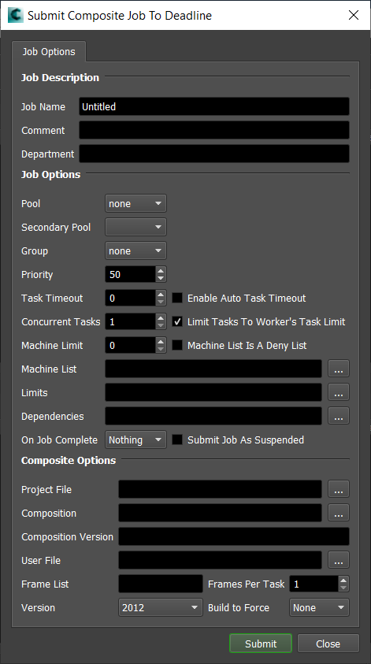
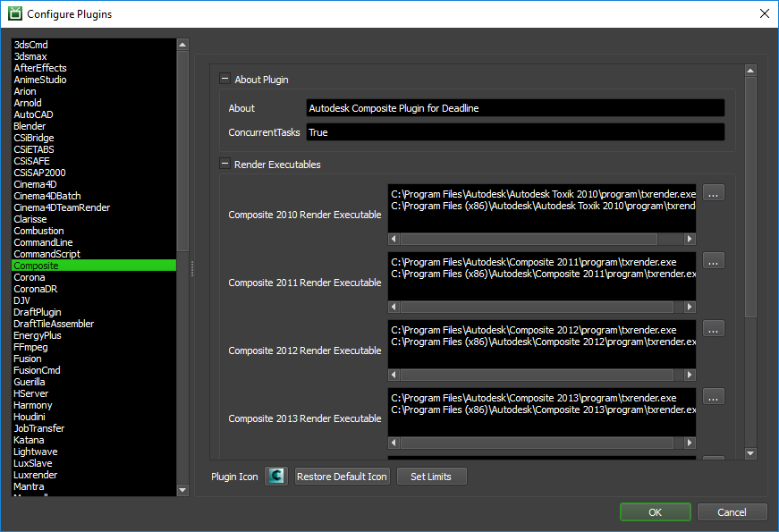

Composite¶
Job Submission¶
You can submit jobs from within Composite by installing the integrated submission script, or you can submit them from the Monitor. The instructions for installing the :ref:`integrated submission script can be found further down this page.
To submit from within Composite, select the version you would like to submit, hit render, and choose the Background option when prompted.

Submission Options¶
The general Deadline options are explained in the Job Submission documentation, and the Integration options are explained in the Integration documentation. The Composite specific options are:
Project File: The Composite .txproject file.
Composition: Path to the composition that you want to submit.
Composition Version: The version of the current composition selected.
Users ini file: The path to the user.ini file for this composition.
Version: The version of Composite to use.
Build to Force: Force 32 bit or 64 bit rendering.
Plugin Configuration¶
You can configure the Composite plugin settings from the Monitor. While in power user mode, select Tools -> Configure Plugins and select the Composite plugin from the list on the left.
Render Executables
Composite Executable: The path to the txrender executable file used for rendering. Enter alternative paths on separate lines. Different executable paths can be configured for each version installed on your render nodes.
Integrated Submission Script Setup¶
The following procedures describe how to setup the integrated Composite submission script. This script allows for submitting Composite render jobs to Deadline directly from within the Composite editing GUI.
You can either run the Submitter installer or manually install the submission script.
Submitter Installer¶
Run the Submitter Installer located at
<Repository>/submission/Composite/Installers.
Manual Installation¶
Copy the file:
[Repository]\submission\Composite\Client\DeadlineCompositeClient.py to [CompositeInstall Directory]\resources\scripts\
Setup the Custom Render Action.
In Composite under the Edit menu select Edit -> Project Preferences
In the opened dialog select the Render Actions tab
Under Render Actions, right click and select New
Name the new action ‘Deadline’
Enter the following for the Render Command (all on one line):
"<PythonExec>" "<ScriptsFolder>/DeadlineCompositeClient.py" -d "<RenderProjectPath>" -u "<RenderUserPath>" -c "<Composition>" -v "<Version>" -o "<Outputs>" -s "<StartFrame>" -e "<EndFrame>"
There are two additional options you can add to this line:
-r “COMPOSITE_VERSION” (where COMPOSITE_VERSION is the version of Composite, like 2012)
-b “COMPOSITE_BUILD” (where COMPOSITE_BUILD is the bitness of Composite, which can be set to None, 32bit, or 64bit)

In the Render window, select ‘Deadline’ as the Action and press Start.

Error Messages and Meanings¶
This is a collection of known Composite error messages and their meanings, as well as possible solutions. We want to keep this list as up to date as possible, so if you run into an error message that isn’t listed here, please visit the Thinkbox Help Centre and let us know.
Currently, no error messages have been reported for this plugin.

{kind=link}
{kind=link}